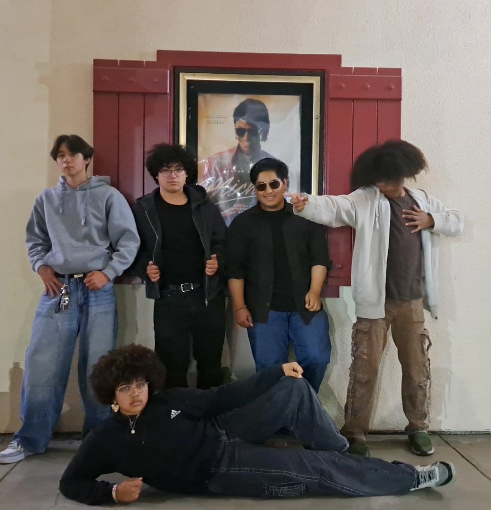

Introducing Cooper
My name is Jade Cooper, the owner and creator of my baking business, Cooper'sConfections. I am 17 years old, now reaching my 4th year of lifting my business up off the ground. Once I have hopefully finished building my website and I've graduated from El Camino High School, I am fully invested in pursuing a business major at my favorite school, CalState San Marcos, while simutaniously taking an 8 month culinary course at The Institution of Culinary Education, all the way up in LA. As anyone could imagine, in my free time I love to get creative which ties heavily into my baking. It's hard bakin when so many people are making the same things as you, so what I try to do is brainstorm a bunch of new cookie ideas especially if they corelate to the season or holiday of the month we are in.About Me
I am a creative thinker who enjoys baking and socializing.
My Favorite Website
I love to go shopping, whether it's for baking materials or clothing.
Contact Me
While my official business website is no ready yet, feel free to take a look and see my skill.
